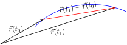
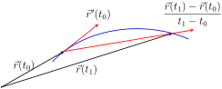
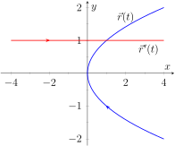
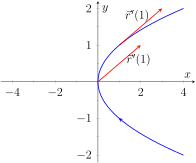
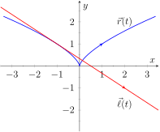
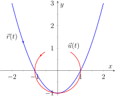

Gregory Hartman, Ph.D., Sean Fitzpatrick, Ph.D. (Editor), Alex Jordan, Ph.D. (Editor), Carly Vollet, M.S. (Editor)
Section12.2Calculus and Vector-Valued Functions
The previous section introduced us to a new mathematical object, the vector-valued function. We now apply calculus concepts to these functions. We start with the limit, then work our way through derivatives to integrals.
Subsection12.2.1Limits of Vector-Valued Functions
The initial definition of the limit of a vector-valued function is a bit intimidating, as was the definition of the limit in Definition 1.2.2. The theorem following the definition shows that in practice, taking limits of vector-valued functions is no more difficult than taking limits of real-valued functions.
Definition12.2.1.Limits of Vector-Valued Functions.
Let \(I\) be an open interval containing \(c\text{,}\) and let \(\vec r(t)\) be a vector-valued function defined on \(I\text{,}\) except possibly at \(c\text{.}\) The limit of \(\vec r(t)\text{,}\) as \(t\) approaches \(c\text{,}\) is \(\vec L\), expressed as
means that given any \(\varepsilon \gt 0\text{,}\) there exists a \(\delta \gt 0\) such that for all \(t\neq c\text{,}\) if \(\abs{t-c} \lt \delta\text{,}\) we have \(\norm{\vec r(t) - \vec L} \lt \varepsilon\text{.}\)
Note how the measurement of distance between real numbers is the absolute value of their difference; the measure of distance between vectors is the vector norm, or magnitude, of their difference.
Theorem 12.2.2 states that we can compute limits of vector-valued functions component-wise.
Theorem12.2.2.Limits of Vector-Valued Functions.
Let \(\vec r(t) = \la \,f(t),g(t)\,\ra\) be a vector-valued function in \(\mathbb{R}^2\) defined on an open interval \(I\) containing \(c\text{,}\) except possibly at \(c\text{.}\) Then
Let \(\vec r(t) = \la \,f(t),g(t),h(t)\,\ra\) be a vector-valued function in \(\mathbb{R}^3\) defined on an open interval \(I\) containing \(c\text{,}\) except possibly at \(c\text{.}\) Then
Definition12.2.5.Continuity of Vector-Valued Functions.
Let \(\vec r(t)\) be a vector-valued function defined on an open interval \(I\) containing \(c\text{.}\)
\(\vec r(t)\) is continuous at \(c\) if \(\lim\limits_{t\to c} \vec r(t) = r(c)\text{.}\)
If \(\vec r(t)\) is continuous at all \(c\) in \(I\text{,}\) then \(\vec r(t)\) is continuous on \(I\text{.}\)
We again have a theorem that lets us evaluate continuity component-wise.
Theorem12.2.6.Continuity of Vector-Valued Functions.
Let \(\vec r(t)\) be a vector-valued function defined on an open interval \(I\) containing \(c\text{.}\) Then \(\vec r(t)\) is continuous at \(c\) if, and only if, each of its component functions is continuous at \(c\text{.}\)
Example12.2.8.Evaluating continuity of vector-valued functions.
Let \(\ds\vec r(t) = \la \frac{\sin(t) }{t},\, t^2-3t+3,\,\cos(t) \ra\text{.}\) Determine whether \(\vec r\) is continuous at \(t=0\) and \(t=1\text{.}\)
While the second and third components of \(\vec r(t)\) are defined at \(t=0\text{,}\) the first component, \((\sin(t) )/t\text{,}\) is not. Since the first component is not even defined at \(t=0\text{,}\)\(\vec r(t)\) is not defined at \(t=0\text{,}\) and hence it is not continuous at \(t=0\text{.}\)
At \(t=1\) each of the component functions is continuous. Therefore \(\vec r(t)\) is continuous at \(t=1\text{.}\)
Subsection12.2.3Derivatives
Consider a vector-valued function \(\vec r\) defined on an open interval \(I\) containing \(t_0\) and \(t_1\text{.}\) We can compute the displacement of \(\vec r\) on \([t_0,t_1]\text{,}\) as shown in Figure 12.2.9.(a). Recall that dividing the displacement vector by \(t_1-t_0\) gives the average rate of change on \([t_0,t_1]\text{,}\) as shown in Figure 12.2.9.(b).
(a)
(b)
Figure12.2.9.Illustrating displacement, leading to an understanding of the derivative of vector-valued functions
The derivative of a vector-valued function is a measure of the instantaneous rate of change, measured by taking the limit as the length of \([t_0,t_1]\) goes to 0. Instead of thinking of an interval as \([t_0,t_1]\text{,}\) we think of it as \([c,c+h]\) for some value of \(h\) (hence the interval has length \(h\)). The average rate of change is
for any value of \(h\neq0\text{.}\) We take the limit as \(h\to0\) to measure the instantaneous rate of change; this is the derivative of \(\vec r\text{.}\)
Definition12.2.10.Derivative of a Vector-Valued Function.
Let \(\vec r(t)\) be continuous on an open interval \(I\) containing \(c\text{.}\)
If a vector-valued function has a derivative for all \(c\) in an open interval \(I\text{,}\) we say that \(\vec r(t)\) is differentiable on \(I\text{.}\)
Once again we might view this definition as intimidating, but recall that we can evaluate limits component-wise. The following theorem verifies that this means we can compute derivatives component-wise as well, making the task not too difficult.
Theorem12.2.11.Derivatives of Vector-Valued Functions.
Let \(\vec r(t) = \la \, f(t), g(t)\,\ra\text{.}\) Then
\(\vec r(t)\) and \(\vrp(t)\) are graphed together in Figure 12.2.14.(a). Note how plotting the two of these together, in this way, is not very illuminating. When dealing with real-valued functions, plotting \(f(x)\) with \(\fp(x)\) gave us useful information as we were able to compare \(f\) and \(\fp\) at the same \(x\)-values. When dealing with vector-valued functions, it is hard to tell which points on the graph of \(\vrp\) correspond to which points on the graph of \(\vec r\text{.}\)
We easily compute \(\vrp(1) = \la 2,1\ra\text{,}\) which is drawn in Figure 12.2.14 with its initial point at the origin, as well as at \(\vec r(1) = \la 1,1\ra\text{.}\) These are sketched in Figure 12.2.14.(b).
(a)
(b)
Figure12.2.14.Graphing the derivative of a vector-valued function in Example 12.2.13
Example12.2.15.Derivatives of vector-valued functions.
Let \(\vec r(t) = \la \cos(t) , \sin(t) , t\ra\text{.}\) Compute \(\vrp(t)\) and \(\vrp(\pi/2)\text{.}\) Sketch \(\vrp(\pi/2)\) with its initial point at the origin and at \(\vec r(\pi/2)\text{.}\)
We compute \(\vrp\) as \(\vrp(t) = \la -\sin(t) , \cos(t) , 1\ra\text{.}\) At \(t= \pi/2\text{,}\) we have \(\vrp(\pi/2) = \la -1,0,1\ra\text{.}\)Figure 12.2.16 shows a graph of \(\vec r(t)\text{,}\) with \(\vrp(\pi/2)\) plotted with its initial point at the origin and at \(\vec r(\pi/2)\text{.}\)
Figure12.2.16.Viewing a vector-valued function and its derivative at one point
In Examples 12.2.13 and Example 12.2.15, sketching a particular derivative with its initial point at the origin did not seem to reveal anything significant. However, when we sketched the vector with its initial point on the corresponding point on the graph, we did see something significant: the vector appeared to be tangent to the graph. We have not yet defined what “tangent” means in terms of curves in space; in fact, we use the derivative to define this term.
Definition12.2.17.Tangent Vector, Tangent Line.
Let \(\vec r(t)\) be a differentiable vector-valued function on an open interval \(I\) containing \(c\text{,}\) where \(\vrp(c)\neq \vec 0\text{.}\)
A vector \(\vec v\) is tangent to the graph of \(\vec r(t)\) at \(t=c\) if \(\vec v\) is parallel to \(\vrp(c)\text{.}\)
The tangent line to the graph of \(\vec r(t)\) at \(t=c\) is the line through \(\vec r(c)\) with direction parallel to \(\vrp(c)\text{.}\) An equation of the tangent line is
Example12.2.19.Finding tangent lines to curves in space.
Let \(\vec r(t) = \la t,t^2,t^3\ra\) on \([-1.5,1.5]\text{.}\) Find the vector equation of the line tangent to the graph of \(\vec r\) at \(t=-1\text{.}\)
To find the equation of a line, we need a point on the line and the line's direction. The point is given by \(\vec r(-1) = \la -1,1,-1\ra\text{.}\) (To be clear, \(\la -1,1,-1\ra\) is a vector, not a point, but we use the point “pointed to” by this vector.)
The direction comes from \(\vrp(-1)\text{.}\) We compute, component-wise, \(\vrp(t) = \la 1,2t, 3t^2\ra\text{.}\) Thus \(\vrp(-1) = \la 1,-2,3\ra\text{.}\)
This line is graphed with \(\vec r(t)\) in Figure 12.2.22.

Figure12.2.22.Graphing \(\vec r(t)\) and its tangent line in Example 12.2.21
At \(t=0\text{,}\) we have \(\vrp(0) = \la 0,0\ra=\vec 0\text{!}\) This implies that the tangent line “has no direction.” We cannot apply Definition 12.2.17, hence cannot find the equation of the tangent line.
We were unable to compute the equation of the tangent line to \(\vec r(t)= \la t^3,t^2\ra\) at \(t=0\) because \(\vrp(0) = \vec 0\text{.}\) The graph in Figure 12.2.22 shows that there is a cusp at this point. This leads us to another definition of smooth, previously defined by Definition 10.2.22 in Section 10.2.
Definition12.2.23.Smooth Vector-Valued Functions.
Let \(\vec r(t)\) be a differentiable vector-valued function on an open interval \(I\) where \(\vrp(t)\) is continuous on \(I\text{.}\)\(\vec r(t)\) is smooth on \(I\) if \(\vrp(t)\neq \vec 0\) on \(I\text{.}\)
Having established derivatives of vector-valued functions, we now explore the relationships between the derivative and other vector operations. The following theorem states how the derivative interacts with vector addition and the various vector products.
Theorem12.2.25.Properties of Derivatives of Vector-Valued Functions.
Let \(\vec r\) and \(\vec s\) be differentiable vector-valued functions, let \(f\) be a differentiable real-valued function, and let \(c\) be a real number.
Example12.2.27.Using derivative properties of vector-valued functions.
Let \(\vec r(t) = \la t, t^2-1\ra\) and let \(\vec u(t)\) be the unit vector that points in the direction of \(\vec r(t)\text{.}\)
Graph \(\vec r(t)\) and \(\vec u(t)\) on the same axes, on \([-2,2]\text{.}\)
Find \(\vec u\,'(t)\) and sketch \(\vec u\,'(-2)\text{,}\)\(\vec u\,'(-1)\) and \(\vec u\,'(0)\text{.}\) Sketch each with initial point the corresponding point on the graph of \(\vec u\text{.}\)
\(\vec r(t)\) and \(\vec u(t)\) are graphed in Figure 12.2.28. Note how the graph of \(\vec u(t)\) forms part of a circle; this must be the case, as the length of \(\vec u(t)\) is 1 for all \(t\text{.}\)

Figure12.2.28.Graphing \(\vec r(t)\) and \(\vec u(t)\) in Example 12.2.27
To compute \(\vec u\,'(t)\text{,}\) we use Theorem 12.2.25, writing
and then take the derivative. It is a matter of preference; this latter method requires two applications of the Quotient Rule where our method uses the Product and Chain Rules.) We find \(\fp(t)\) using the Chain Rule:
This is admittedly very “messy;” such is usually the case when we deal with unit vectors. We can use this formula to compute \(\vec u\,'(-2)\text{,}\)\(\vec u\,'(-1)\) and \(\vec u\,'(0)\text{:}\)
Figure12.2.29.Graphing some of the derivatives of \(\vec u(t)\) in Example 12.2.27
Each of these is sketched in Figure 12.2.29. Note how the length of the vector gives an indication of how quickly the circle is being traced at that point. When \(t=-2\text{,}\) the circle is being drawn relatively slow; when \(t=-1\text{,}\) the circle is being traced much more quickly.
It is a basic geometric fact that a line tangent to a circle at a point \(P\) is perpendicular to the line passing through the center of the circle and \(P\text{.}\) This is illustrated in Figure 12.2.29; each tangent vector is perpendicular to the line that passes through its initial point and the center of the circle. Since the center of the circle is the origin, we can state this another way: \(\vec u\,'(t)\) is orthogonal to \(\vec u(t)\text{.}\)
Recall that the dot product serves as a test for orthogonality: if \(\vec u\cdot \vec v = 0\text{,}\) then \(\vec u\) is orthogonal to \(\vec v\text{.}\) Thus in the above example, \(\vec u(t)\cdot \vec u\,'(t)=0\text{.}\)
This is true of any vector-valued function that has a constant length, that is, that traces out part of a circle. It has important implications later on, so we state it as a theorem (and leave its formal proof as an Exercise.)
Theorem12.2.30.Vector-Valued Functions of Constant Length.
Let \(\vec r(t)\) be a vector-valued function of constant length that is differentiable on an open interval \(I\text{.}\) That is, \(\norm{\vec r(t)} = c\) for all \(t\) in \(I\text{;}\) equivalently, \(\vec r(t)\cdot \vec r(t) = c^2\) for all \(t\) in \(I\text{.}\) Then \(\vec r(t)\cdot\vrp(t) = 0\) for all \(t\) in \(I\text{.}\)
Subsection12.2.4Integration
Before formally defining integrals of vector-valued functions, consider the following equation that our calculus experience tells us should be true:
That is, the integral of a rate of change function should give total change. In the context of vector-valued functions, this total change is displacement. The above equation is true; we now develop the theory to show why.
We can define antiderivatives and the indefinite integral of vector-valued functions in the same manner we defined indefinite integrals in Definition 5.1.2. However, we cannot define the definite integral of a vector-valued function as we did in Definition 5.2.6. That definition was based on the signed area between a function \(y=f(x)\) and the \(x\)-axis. An area-based definition will not be useful in the context of vector-valued functions. Instead, we define the definite integral of a vector-valued function in a manner similar to that of Theorem 5.3.26, utilizing Riemann sums.
Definition12.2.31.Antiderivatives, Indefinite and Definite Integrals of Vector-Valued Functions.
Let \(\vec r(t)\) be a continuous vector-valued function on \([a,b]\text{.}\) An antiderivative of \(\vec r(t)\) is a function \(\vec R(t)\) such that \(\vec R'(t) = \vec r(t)\text{.}\)
The set of all antiderivatives of \(\vec r(t)\) is the indefinite integral of \(\vec r(t)\text{,}\) denoted by
where \(\Delta t_i\) is the length of the \(i\)th subinterval of a partition of \([a,b]\text{,}\)\(\norm{\Delta t}\) is the length of the largest subinterval in the partition, and \(c_i\) is any value in the \(i\)th subinterval of the partition.
It is probably difficult to infer meaning from the definition of the definite integral. The important thing to realize from the definition is that it is built upon limits, which we can evaluate component-wise.
The following theorem simplifies the computation of definite integrals; the rest of this section and the following section will give meaning and application to these integrals.
Theorem12.2.32.Indefinite and Definite Integrals of Vector-Valued Functions.
Let \(\vec r(t) = \la f(t),g(t)\ra\) be a vector-valued function in \(\mathbb{R}^2\) that is continuous on \([a,b]\text{.}\)
Note how each indefinite integral creates its own constant which we collect as one constant vector \(\vec C\text{.}\) Knowing \(\vrp(0) = \la 5,3,0\ra\) allows us to solve for \(\vec C\text{:}\)
What does the integration of a vector-valued function mean? There are many applications, but none as direct as “the area under the curve” that we used in understanding the integral of a real-valued function.
A key understanding for us comes from considering the integral of a derivative:
Integrating a rate of change function gives displacement.
Noting that vector-valued functions are closely related to parametric equations, we can describe the arc length of the graph of a vector-valued function as an integral. Given parametric equations \(x=f(t)\text{,}\)\(y=g(t)\text{,}\) the arc length on \([a,b]\) of the graph is
as stated in Theorem 10.3.17 in Section 10.3. If \(\vrt = \la f(t), g(t)\ra\text{,}\) note that \(\sqrt{\fp(t)^2+g'(t)^2} = \norm{\vrp(t)}\text{.}\) Therefore we can express the arc length of the graph of a vector-valued function as an integral of the magnitude of its derivative.
Theorem12.2.36.Arc Length of a Vector-Valued Function.
Let \(\vrt\) be a vector-valued function where \(\vrp(t)\) is continuous on \([a,b]\text{.}\) The arc length \(L\) of the graph of \(\vrt\) is
\begin{equation*}
L = \int_a^b \norm{\vrp(t)}\, dt\text{.}
\end{equation*}
Note that we are actually integrating a scalar-function here, not a vector-valued function.
The next section takes what we have established thus far and applies it to objects in motion. We will let \(\vrt\) describe the path of an object in the plane or in space and will discover the information provided by \(\vrp(t)\) and \(\vrp'(t)\text{.}\)
Exercises12.2.5Exercises
Terms and Concepts
1.
Limits, derivatives and integrals of vector-valued functions are all evaluated -wise.
2.
The definite integral of a rate of change function gives .
3.
Why is it generally not useful to graph both \(\vec r(t)\) and \(\vrp(t)\) on the same axes?
4.
Theorem 12.2.25 contains three product rules. What are the three different types of products used in these rules?
The following exercises ask you to verify parts of Theorem 12.2.25. In each let \(f(t) = t^3\text{,}\)\(\vec r(t) =\la t^2,t-1,1\ra\) and \(\vec s(t) = \la \sin(t) , e^t,t\ra\text{.}\) Compute the various derivatives as indicated.
29.
Simplify \(f(t)\vec r(t)\text{,}\) then find its derivative; show this is the same as \(\fp(t)\vec r(t) + f(t)\vrp(t)\text{.}\)
30.
Simplify \(\vec r(t)\cdot\vec s(t)\text{,}\) then find its derivative; show this is the same as \(\vrp(t)\cdot\vec s(t) + \vec r(t)\cdot\vec s\,'(t)\text{.}\)
31.
Simplify \(\vec r(t)\times\vec s(t)\text{,}\) then find its derivative; show this is the same as \(\vrp(t)\times\vec s(t) + \vec r(t)\times\vec s\,'(t)\text{.}\)
32.
Simplify \(\ds \vec r\big(f(t)\big)\text{,}\) then find its derivative; show this is the same as \(\ds \vrp\big(f(t)\big)\fp(t)\text{.}\)
Exercise Group.
In the following exercises, evaluate the given definite or indefinite integral.
\(\vec r(t) = \la t^3,t^2,t^3 \ra\) on \([0,1]\text{.}\)
44.
\(\vec r(t) = \la e^{-t}\cos(t) ,e^{-t}\sin(t) \ra\) on \([0,1]\text{.}\)
45.
Prove Theorem 12.2.30; that is, show if \(\vec r(t)\) has constant length and is differentiable, then \(\vec r(t)\cdot \vrp(t)=0\text{.}\) (Hint: use the Product Rule to compute \(\frac{d}{dt}\big(\vec r(t)\cdot\vec r(t)\big)\text{.}\))